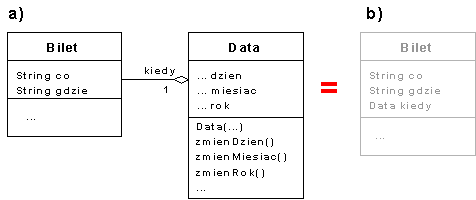
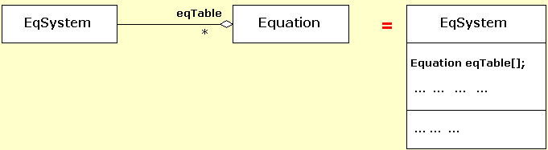

Zdefiniuj klasy w taki sposób, aby poni¿szy kod testuj±cy wykona³ siê w przedstawiony poni¿ej sposób.
kod testowy |
wynik dzia³ania |
Data data1=new Data(30,4,2002);
Bilet impreza1=new Bilet("koncert Petera Gabriela",
"Poznan",data1
);
data1.zmienDzien(6);
data1.zmienMiesiac(12);
data1.zmienRok(2004);
Bilet impreza2=new Bilet("koncert Diany Krall",
"Warszawa",data1
);
Data data2=impreza2.podajDate();
data2.przesun(30);
Bilet impreza3=new Bilet("Urodziny Panny X",
"magiczne miejsce",data2
);
System.out.println(impreza1);
System.out.println(impreza2);
System.out.println(impreza3); |
Co: koncert Petera Gabriela
Gdzie: Poznan
Kiedy: 30 kwietnia 2002
Co: koncert Diany Krall
Gdzie: Warszawa
Kiedy: 6 grudnia 2004
Co: Urodziny Panny X
Gdzie: magiczne miejsce
Kiedy: 5 stycznia 2005
|
kod testowy |
wynik dzia³ania |
WorldString w1 = new WorldString("Eukaliptus");
WorldString w2 = new WorldString("Yuka",
WorldString.LEFT|WorldString.DOWN
);
WorldString w3 = new WorldString("Kaktus",
WorldString.RIGHT|WorldString.UP
);
System.out.println(w1);
System.out.println(w2);
System.out.println(w3);
w1.println(WorldString.RIGHT);
System.out.println(w1);
w2.println(WorldString.LEFT|WorldString.UP);
w2.println(WorldString.UP);
w2.println(WorldString.DOWN);
System.out.println(w2);
w3.setPosition(WorldString.RIGHT|WorldString.DOWN);
System.out.println(w3);
w3.println(WorldString.LEFT|WorldString.RIGHT|WorldString.DOWN); |
Eukaliptus
Y
u
k
a
s
u
t
k
a
K
sutpilakuE
Eukaliptus
a
k
u
Y
a
k
u
Y
Y
u
k
a
Y
u
k
a
K
a
k
t
u
s
Err: too many parameters
|
| kod programu | wynik dzia³ania programu |
Zespolona z1= new Zespolona(1,2);
Zespolona z2= new Zespolona(2,-1);
System.out.println(z1);
System.out.println(z2);
Zespolona.setNextName('P');
Zespolona z3=new Zespolona(4,3);
Zespolona z4=new Zespolona(0,0);
System.out.println(z1.getName()+" = "+z1);
System.out.println(z2.getName()+" = "+z2);
System.out.println(z3.getName()+" = "+z3);
System.out.println(z4.getName()+" = "+z4);
Zespolona.wyswietlDzielenie(z1,z2);
z1.wyswietlDzielenie(z3);
z1.wyswietlDzielenie(z4);
|
1.0+2.0i 2.0-1.0i A = 1.0+2.0i B = 2.0-i P = 4.0+3.0i Q = 0 A 1.0+2.0i --- = ---------- = i B 2.0-1.0i A 1.0+2.0i --- = ---------- = 0.4+0.2i P 4.0+3.0i A --- Err: nie mozna dzielic przez ZERO! Q |

Wykorzystaj do testów poni¿szy fragment kodu.| kod programu | wynik dzia³ania programu |
int t1[]={1,-2,0};
Equation r1=new Equation(t1);
Equation tab[]={r1,
new Equation(new int[]{3,1,28})
};
System.out.println("---------------------- 0. checkpoint");
System.out.println(tab[0]);
System.out.println(tab[1]);
EqSystem s1=new EqSystem(tab);
System.out.println("\n---------------------- 1. checkpoint");
System.out.println(s1);
System.out.println(s1.getSolution());
EqSystem.setNextNumber(2008); //przygotowanie do drugiego próby
int t2[]={-7,-7,34};
t1[0]=1; t1[1]=1;
tab[0]=new Equation(t1);
tab[1]=new Equation(t2);
EqSystem s2=new EqSystem(tab);
System.out.println("\n---------------------- 2. checkpoint");
System.out.println(s2);
System.out.println("\n---------------------- 3. checkpoint");
System.out.println(s1);
System.out.println(s1.getSolution()+"\n\n\n");
System.out.println(s2);
System.out.println(s2.getSolution());
// przygotowanie do czwartej, ostatniej próby
Equation tab2[]={ new Equation(new int[]{3,1,5}),
new Equation(new int[]{9,3,15})
};
EqSystem s3=new EqSystem(tab2);
System.out.println("\n---------------------- 4. checkpoint");
System.out.println(s3);
System.out.println(s3.getSolution());
|
---------------------- 0. checkpoint
x + -2y = 0
3x + y = 28
---------------------- 1. checkpoint
(101) +---
| x + -2y = 0
| 3x + y = 28
+---
Uklad (101) ma dokladnie jedno rozwiazanie:
x=8, y=4
---------------------- 2. checkpoint
(2008) +---
| x + y = 0
| -7x + -7y = 34
+---
---------------------- 3. checkpoint
(101) +---
| x + -2y = 0
| 3x + y = 28
+---
Uklad (101) ma dokladnie jedno rozwiazanie:
x=8, y=4
(2008) +---
| x + y = 0
| -7x + -7y = 34
+---
Uklad (2008) jest sprzeczny
---------------------- 4. checkpoint
(2009) +---
| 3x + y = 5
| 9x + 3y = 15
+---
Uklad (2009) ma nieskonczenie wiele rozwiazan
|